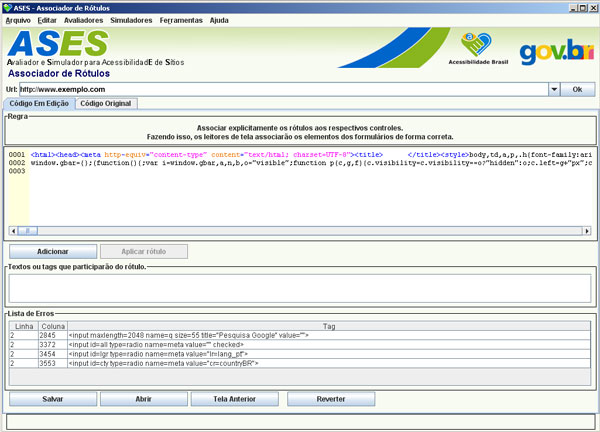

Ferramenta que associa rótulos a controles.

URL: Endereço da página que se deseja avaliar.
Código Fonte:
Adicionar: Adiciona o texto selecionado para ser associado como rótulo do controle.
Aplicar: Faz a associação do rótulo aplicado (presente na caixa de texto) ao código fonte.
Textos ou tags que participarão do rótulo: Mostra as tags e textos que irão ser associados ao rótulo.
Lista de Erros: Lista todos os erros encontrados no código. E, ao clicar sobre o erro, o usuário é direcionado à sua ocorrência no código editável.
Salvar: Salva o arquivo alterado.
Abrir: Abre, e avalia automaticamente, o arquivo HTML.
Tela Anterior: Retorna à tela anterior a este avaliador.
Reverter: Recarrega o código original, sem edição alguma.
